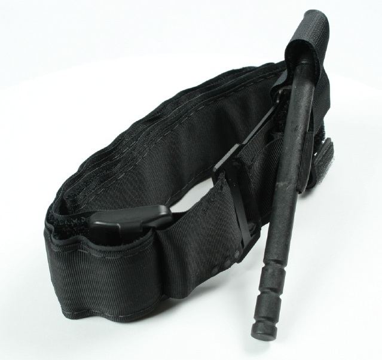
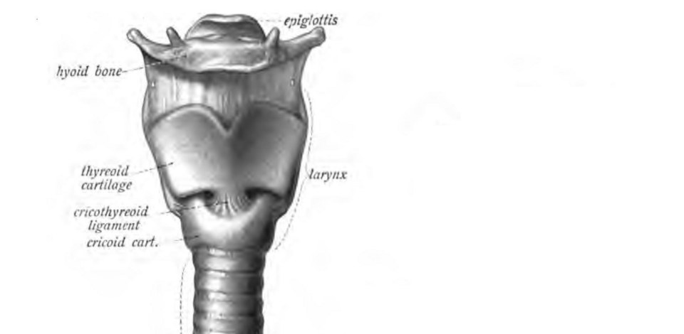
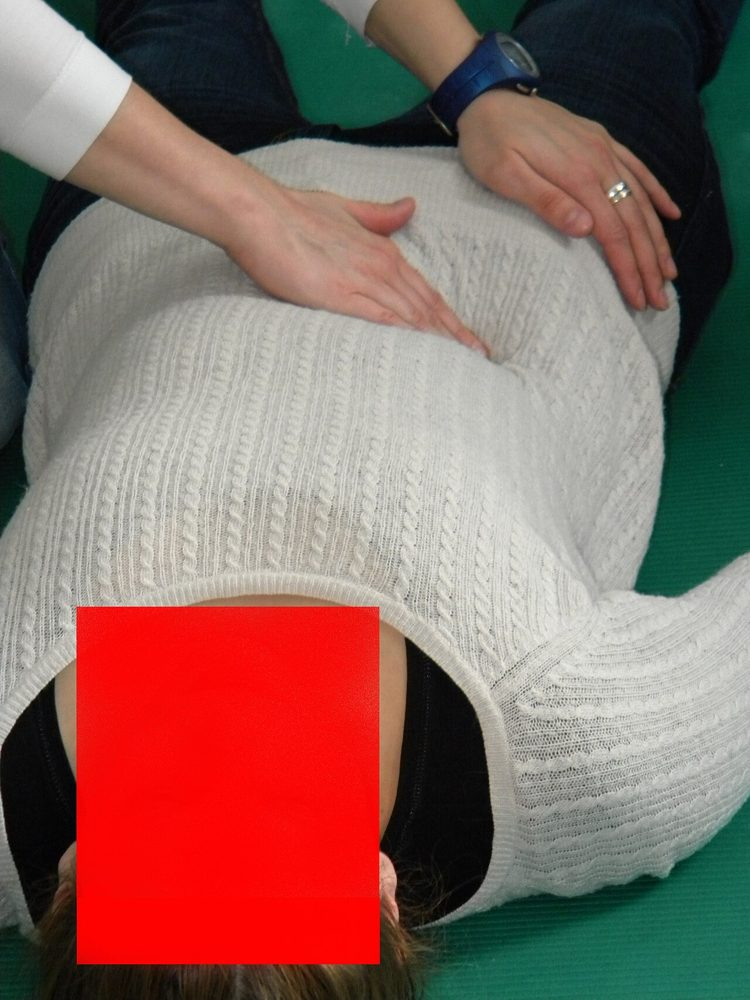

מבוא לטראומה
מערכת טראומה, הסקר הראשוני xABCDE, הלם דימומי והחייאה בשליטה על נזק
בסוף המפגש תדעו
- להסביר מהי מערכת טראומה ולמה טיפול במרכז טראומה מציל חיים
- לבצע את הסקר הראשוני xABCDE בסדר הנכון ולטפל בכל בעיה מסכנת חיים ברגע שמזהים אותה
- לזהות הלם בחולה טראומה ולחפש את מקור הדימום לפי "ארבעה ועוד הרצפה"
- להכיר את עקרונות ההחייאה בשליטה על נזק: מוצרי דם מאוזנים, מעט קריסטלואידים, לחץ דם "מספיק" ו-TXA
- לבצע סקר שניוני מסודר ולהבין למה חוזרים לבדוק את המטופל למחרת
טראומה במספרים
- מרכז טראומה מול בית חולים רגיל (מחקר NSCOT, יותר מ-5,000 מטופלים): תמותה בבית החולים נמוכה ב-20% ותמותה בשנה נמוכה ב-25%
- הקמת מערכת טראומה (Nathens, כ-400,000 מטופלים ב-17 שנה): ירידה של 8% בתמותה
- 40% מההרוגים בתאונות דרכים עוד היו בחיים כשהגיע הצוות הראשון
- רוב הפצועים צעירים ולכן המחיר לחברה עצום
המטופל הנכון, למקום הנכון, בזמן הנכון
- מערכת "כוללת": כל בתי החולים שותפים, כל אחד לפי רמתו (1–4), עם כללי מיון בשטח והסכמי העברה
- מערכת "בלעדית" שלחה כמעט את כולם למרכז אחד: טוב לפצועים קשה, אבל הרבה העברות מיותרות של פצועים קל
- רצף אחד: מניעה, טיפול בשטח, בית חולים, שיקום, רישום ושיפור איכות
- בשטח: בטיחות הזירה, הערכה מהירה, החלטה לאן מפנים, טיפול תוך כדי נסיעה ("לטעון ולנסוע"). שואפים לפחות מ-15 דקות בזירה
הסקר הראשוני: xABCDE
2. לא מחכים לאבחנה מדויקת כדי לטפל
3. לא צריך אנמנזה מפורטת כדי להתחיל
צוות טראומה הוא צוות שנבנה לרגע
- תדריך לפני ההגעה: מי ראש הצוות, מי בנתיב האוויר, מי בגישה לווריד, איזה ציוד ודם צריך
- ראש הצוות עומד למרגלות המיטה ורואה את התמונה הכוללת. מי שמטפל בנתיב האוויר עומד בראש המיטה
- ה-3C בתקשורת: פונים בשם או בתפקיד, נותנים הוראה ברורה וסוגרים מעגל ("נתתי, ראש צוות")
- פסק זמן קצר בסוף הסקר הראשוני ולפני מעבר ל-CT או לחדר ניתוח. בסוף: תחקיר בלי האשמות
- טיפול רגיש לטראומה: מדברים עם המטופל, מסבירים, שומרים על צניעות ונותנים משכך כאבים. גם מטופל שנראה מחוסר הכרה עשוי לזכור
עוצרים את הדימום לפני הכול
- חושפים את כל האזור ומפעילים לחץ ישיר ומילוי הפצע בגזה (packing)
- חוסם עורקים: כשהלחץ לא עוצר את הדימום, בדימום עורקי פועם, או בקטיעה מלאה או כמעט מלאה
- שמים 5–8 ס״מ מעל מקום הדימום, על העור, לא על בגד ולא על מפרק. מהדקים עד שאין דופק מתחת לחוסם
- עדיין מדמם? חוסם שני 5–8 ס״מ מעל הראשון. רושמים את השעה על החוסם
- עד שעתיים: בלי עלייה בקטיעות ובסיבוכים. אחרי הייצוב שוקלים להחליף אותו בחבישת לחץ
- דימום בחזה, בבטן, באגן ובאזורים "צומתיים" (מפשעה, בית שחי) לא נעצר בלחץ חיצוני: צריך ניתוח או צנתור

"מה שמך?"
- תשובה ברורה אומרת שכרגע נתיב האוויר תקין. דיבור משובש = ירידה בהכרה או חסימה
- סימני אזהרה: אי-שקט, נשימה רועשת, שאיפת עשן, פגיעה בפנים, דם בלוע, ירידה בסטורציה
- C-spine: בכל מנגנון מתאים מניחים שיש פגיעה לא יציבה. צווארון קשיח או ייצוב ידני
- פצוע ער עם פגיעה בפנים שנושם טוב בישיבה: משאירים אותו כך וקוראים למומחה. נתיב סביר עדיף על אין נתיב
- מטופל בהלם: צנרור לפני שנותנים דם עלול לגרום לקריסה. בסקירה של 4 מחקרים התמותה הייתה 50% כשהדם ניתן קודם, לעומת 78%
- הצנרור: וידאו-לרינגוסקופ (הצלחה בניסיון הראשון 85% לעומת 71%). מאשרים מיקום עם ETCO2

חזה אוויר בלחץ: אבחנה קלינית
הסימנים
- כניסת אוויר חלשה או חסרה בצד הפגוע
- לחץ דם נמוך (פחות דם חוזר ללב)
- ורידי צוואר בולטים (קשה לראות), אמפיזמה תת-עורית
- סטיית trachea לצד הנגדי (עדינה, ממששים ב-suprasternal notch)
- במונשם: לחצי הנשמה עולים

חזה אוויר בלחץ משמאל, לפני ואחרי

👆 לחצו על אזור בצילום כדי לקרוא עליו
חלל החזה השמאלי שחור ושקוף יותר, בלי כלי דם ריאתיים עד הדופן. זה האוויר שנכלא ב-pleural space ולא יכול לצאת
הריאה השמאלית נדחסה אל ה-hilum. ככל שהאוויר מצטבר, הלחץ בחזה עולה
הלחץ דוחף את הלב ואת ה-trachea לצד הנגדי ומקפל את ה-SVC וה-IVC. פחות דם חוזר ללב ולכן לחץ הדם יורד. זה ה"לחץ" בחזה אוויר בלחץ
הריאה התפשטה וה-mediastinum חזר למרכז. בטראומה הצילום הזה מגיע רק אחרי הטיפול: את האבחנה עושים ליד המיטה
הלם הוא תת-זילוח, לא רק לחץ דם נמוך
סימני הלם
- אי-שקט או בלבול, דופק מהיר, נשימה מהירה, הזעה
- גפיים קרות ומנומרות, דופק פריפרי חלש, לחץ דופק צר
- מיעוט שתן ורק בסוף: לחץ דם נמוך. צעיר בכושר מפצה זמן רב
לא כל הלם הוא דימום
- דימום הוא הסיבה השכיחה ביותר ושוללים אותו ראשון
- חזה אוויר בלחץ · טמפונדה (ורידי צוואר בולטים, פצע חודר בחזה, eFAST)
- הלם נוירוגני: לחץ דם נמוך עם דופק איטי ושיתוק גפיים
- חבלת לב (הפרעות קצב), אלח דם מאוחר, או אירוע רפואי שגרם לתאונה
"ארבעה ועוד הרצפה"
דם, לא מים
- ההגדרה: שליטה מהירה בדימום, עירוי מאוזן של מוצרי דם (או דם מלא), מינימום קריסטלואידים, לחץ סיסטולי "מספיק" של כ-90 עד שהדימום נשלט ותיקון הפרעות הקרישה והחומצה
- למה לא קריסטלואידים: מחמירים חמצת והפרעת קרישה, קשורים ל-ARDS ומאיצים את "שלישיית המוות": היפותרמיה, חמצת וקואגולופתיה
- יחס פלזמה:טסיות:כדוריות של 1:1:1 או 1:1:2, דרך פרוטוקול עירוי מסיבי (MTP) ומחמם נוזלים
- הפרעת קרישה של טראומה מופיעה בכ-25% מהפצועים. TEG או ROTEM מכוונים את העירוי לפי מה שחסר
מוח, חוט שדרה וחום גוף
D · מצב נוירולוגי
- "מה שמך?" ו"תזיז ידיים ורגליים" בודקים מוח וחוט שדרה בשתי שאלות
- מדד GCS (3–15): פקיחת עיניים, תגובה מילולית ותגובה מוטורית. המוטורית מנבאת הכי טוב
- מתעדים GCS ואישונים לפני תרופות הרדמה
- מדד GCS של 8 ומטה: מניחים פגיעת ראש קשה
- הלם נוירוגני: לחץ דם נמוך, דופק איטי ושיתוק. ב-20–29% מפגיעות צוואר, נדיר מתחת ל-T6. אבל קודם שוללים דימום
- מטרת הטיפול בפגיעת ראש: למנוע נזק משני. בלי היפוקסיה ובלי לחץ דם נמוך
E · חשיפה וסביבה
- מפשיטים לגמרי כדי לא לפספס פצע ושומרים על כבוד המטופל
- היפותרמיה מחמירה הלם ודימום: שמיכות חמות, חימום אוויר, חדר חם ונוזלים מחוממים
- מודדים חום ליבה
פתיחת חזה בחדר הטראומה
- ארבע מטרות: לשחרר טמפונדה, לתקן זמנית פצע בלב, להדק את ה-descending aorta ולעצור דימום בחזה
- סימני חיים: אישונים מגיבים, נשימה, דופק ב-carotid, לחץ דם, תנועה או פעילות חשמלית בלב
- מעל גיל 57 התמותה הייתה 100% בחבלה קהה ובחודרת
- לפי EAST: לא בחבלה קהה בלי סימני חיים. כן בפצע חודר, עם או בלי סימני חיים
- לפי WTA: לפי זמן החייאה לפני ההגעה. פחות מ-15 דקות בפצע חודר בגו, פחות מ-10 בחבלה קהה
- בלון ב-aorta (REBOA): אין עדיין הוכחה לתועלת. ניסוי אקראי ראשון נעצר מוקדם בגלל תוצאות גרועות יותר
מהראש עד כפות הרגליים
- אנמנזה AMPLE: רגישויות, תרופות (במיוחד נוגדי קרישה), מחלות והריון, ארוחה אחרונה, אירוע ומנגנון
- בדיקה שיטתית: קרקפת, עיניים, פנים, צוואר, חזה, בטן (סימן חגורת בטיחות), אגן, perineum (דם ב-urethral meatus), גפיים ודפקים ובסוף נוירולוגיה
- הגב: גלגול גוש (log roll) עם ארבעה אנשים: אחד מחזיק ראש וצוואר ומוביל, שניים מגלגלים, אחד בודק. בדיקה רקטלית לפי הצורך
- פצע חודר: סופרים את כל הפצעים, גם בבית השחי, בקפלי העור, ב-perineum ובקרקפת. מסמנים בסמן נראה בצילום
- מעבדה והדמיה: סוג והצלבה, המוגלובין, לקטט, גזים, קרישה, שתן, FAST חוזר, CT לפי הצורך

מחקרים שכדאי להכיר
1,310 פצועים קשה ב-15 שירותי אמבולנס (אוסטרליה, ניו זילנד, גרמניה). הישרדות עם תפקוד טוב אחרי חצי שנה לא השתנתה (53.7% מול 53.5%). תמותה ב-28 יום: 17.3% מול 21.8%. בלי עלייה בקרישים
PATCH-Trauma Investigators (Gruen RL et al.). N Engl J Med 2023;389:127-361,604 פצועים מדממים שקיבלו עירוי מסיבי. מנה גבוהה של קריופרציפיטט מוקדם בנוסף לטיפול הרגיל לא הורידה תמותה ב-28 יום (25.3% מול 26.1%)
Davenport R et al. JAMA 2023;330:1882-91432 פצועים בהלם בבריטניה: 2 מנות דם ו-2 פלזמה לעומת סליין לפני בית החולים. התוצא המשולב (מוות או כישלון בפינוי לקטט) כמעט זהה: 64% מול 65%. המחקר נעצר מוקדם בגלל הקורונה
Crombie N et al. Lancet Haematol 2022;9:e250-61חמישה דברים לקחת למחלקה
- מרכז טראומה ומערכת טראומה מצילים חיים. זמן הוא דם
- בסקר xABCDE קודם עוצרים דימום חיצוני ומטפלים בכל בעיה מסכנת חיים ברגע שמוצאים אותה
- חזה אוויר בלחץ הוא אבחנה קלינית. מנקזים לפני צילום
- הלם בטראומה הוא דימום עד שיוכח אחרת: מחפשים בחזה, בבטן, באגן, בעצמות ארוכות ועל הרצפה
- דם ולא מים: עירוי מאוזן, לחץ דם "מספיק", TXA בתוך 3 שעות ושליטה מהירה בדימום